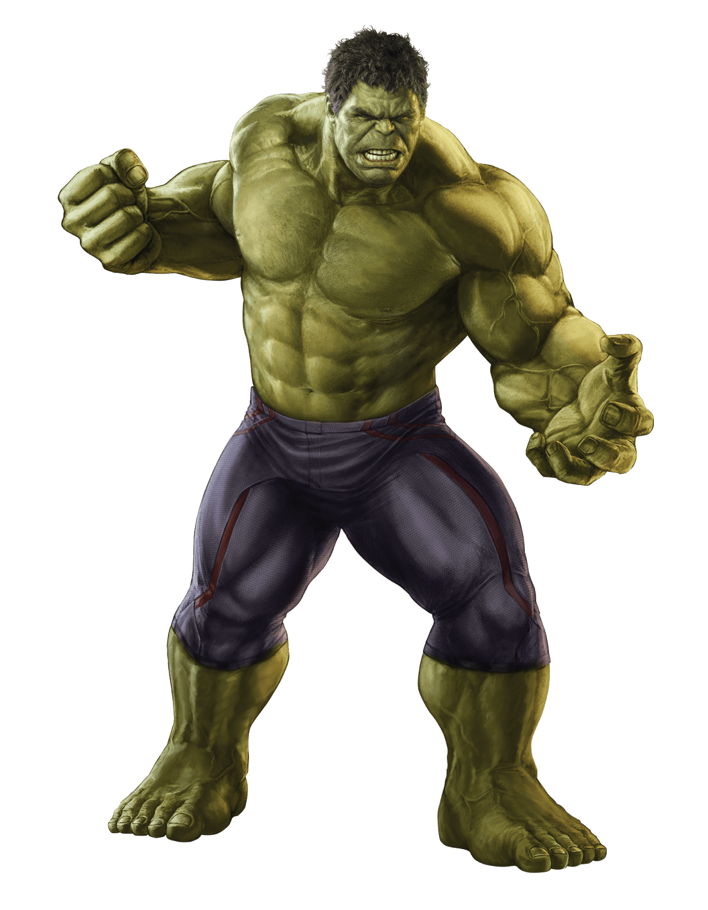

Le Dr Bruce Banner, un brillant physicien nucléaire, crée pour les forces armées des États-Unis un nouveau type d'arme nucléaire, la bombe G, basée sur des rayons gamma.

Durant un essai, Banner aperçoit un adolescent, Rick Jones, allongé dans sa voiture, qui répond bêtement à un pari de ses camarades. Demandant à son assistant Igor Starsky de stopper le compte à rebours, le physicien court vers la zone d'essai et sauve le jeune inconscient en le poussant dans une tranchée de protection. Mais Starsky, qui se nomme en réalité Drenkov, est un espion russe à la solde du gouvernement envoyé pour s'emparer des secrets de Banner. Il laisse la bombe exploser. Le docteur n'a pas le temps de se mettre à l'abri ; il est alors bombardé de rayons gamma, ce qui a pour effet de modifier profondément son ADN, mais qui, à la surprise de tous, ne le tue pas.
Banner reste en observation à l'infirmerie en compagnie de Rick Jones jusqu'au soir où Banner, dans une intense souffrance, se transforme en prenant des proportions colossales, tandis que sa peau devient grise et que son corps entier n'est plus du tout reconnaissable, à l'image de son psychisme presque animal. Dans cet état, il détruit le mur de l'infirmerie simplement en le poussant, puis ne bouge pas lorsqu'une jeep de l'armée lui fonce dessus, démontrant sa force stupéfiante. En raison de sa corpulence, un garde le surnomme « Hulk » lors d'une description faite à ses supérieur.
Depuis, lors de moments de stress ou de colère, Bruce se métamorphose en une créature colossale à la peau verte (cette couleur ayant rapidement remplacé la peau grise originale), d'une force phénoménale, animée par une rage enfouie en lui depuis longtemps (celle d'un petit garçon battu par son père qui a vu sa mère mourir sous les coups de ce dernier) qu'il ne parvient pas à contrôler.